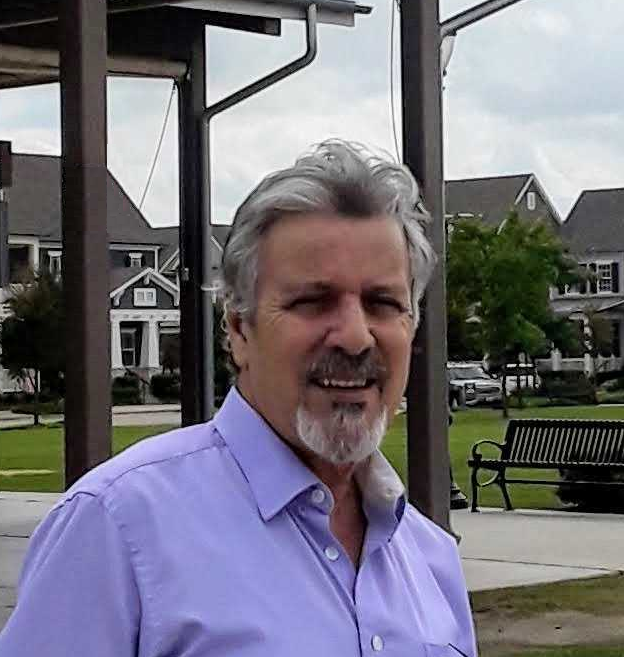

Bonjour & bienvenue
Je m'appelle FM.FODIL et je suis Consultant Sénior dans le domaine IT avec à mon actif un capital expérience appréciable et à ce titre, j'accompagne en tant que facilitateur les entreprises et les organisations désireuses d'améliorer leur performance.
J'exerce ce métier depuis 1996 à ce jour et, j'ai donc capitalisé à la fois des connaissances techniques et du savoir-faire, ainsi que des informations pertinentes dans divers secteurs d'activité et, que je mets à la disposition de mes clients. A ce titre, j'ai accompagné des entreprises et des organisations de toutes tailles et de tous secteurs d'activité, avec du diagnostic, de l'audit, du conseil, du coaching et, des programmes de formation complets conçus sur mesure pour améliorer les compétences et l'expertise de leurs collaborateurs sur l'innovation, la transformation digitale, la cybersécurité orgaisationnelle, le management agile et l'amélioration continue.
Savez-vous pourquoi ce serait très avantageux pour vous de me confier une mission? Tout simplement parce que je me distingue des autres consultants grâce à:
- Mon expertise multidisciplinaire: Fort de mon expertise pointue dans des domaines variés tels que l'innovation technologique, la cybersécurité, une approche intégrée pour répondre aux besoins spécifiques de chaque client en matière de transformation digitale.
- Mon approche personnalisée: Je fournis des services sur mesure en audit, conseil, formation et coaching, adaptés aux besoins des organismes à l'effet qu'ils puissent livrer promptement des projets de haute qualité. Et à ce titre, j'accompagne les équipes de mes clients tout au long du processus pour garantir une intégration réussie des pratiques agiles. car, investir dans la formation agile favorise une culture d'entreprise flexible et innovante.
- Mon savoir-faire en optimisation des processus: Ma maîtrise de Lean Six Sigma contribuera fortement à l'amélioration de l'efficacité de l'ensemble de vos opérations. Car, Lean Six Sigma est une méthode puissante pour les entreprises et les organisations cherchant à améliorer la qualité de leurs produits et/ou services, en les aidant à réduire leurs coûts et à augmenter leur efficacité.
- Ma maîtrise des nouvelles technologies digitales: J'accompagne les équipes des entreprises et des organisations chargées de la mise en oeuvre de projets dans l'adoption des dernières technologies à l'effet de stimuler l'efficacité et la compétitivité et, grâce à mon approche personnalisée, j'élaborerai des stratégies qui répondront à leurs besoins réels. De plus, je leur donnerai des recommandations dont le but est de maximaliser le retour sur investissement tout en minimisant les risques associés à l'innovation.
De plus, vous bénéficierez aussi de plusieurs avantages, dont:
- Ma disponibilité, fléxibilité et réactivité,
- Une communication fluide grâce à un interlocuteur unique,
- Un regard extérieur neutre et objectif,
- Ma grande expérience dans l'audit, le diagnostic, le conseil, le coaching et la formation,
- Ma pédagogie éprouvée, acquise et forgée au fil du temps,
- Mes compétences théoriques en tant que professionnel certifié,
- Mon expérience pratique diversifiée et internationale acquise à travers la réalisation de divers projets IT et dans d'autres domaines,
- Mon capital expérience dans le management et la gouvernance d'organisations,
- Un transfert de savoir vers vos équipes de projets,
- Un gain substantiel en budget et,
- Plus encore...